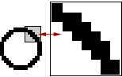
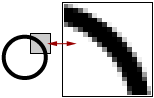

Forside
Introduktion
Valg af
Anvendelse
Motiver

Valg af opløsning
Et digitalt billede er opbygget af pixels. To billeder med samme dimension kan have et forskelligt antal pixel, dvs. at et billede på 5 cm i højde og brede, f.eks. kan laves med enten 5x5 pixels eller med 50x50 pixels. I det første eksempel vil hver pixel være 1x1 cm, og man vil derfor tydeligt kunne se de 25 pixels billedet er lavet af. I det andet eksempel er en pixel 1x1 mm, og det vil derfor være svære at skelne de 250 pixels fra hinanden - det siges at billedet har en højre opløsning, og at opløsningen er 50x50 pixels. Generelt kan man sige, at en højre opløsning giver et pænere billede.
Nedenfor ses et andet eksempel på et billede af en cirkel gemt med hhv. et lavt (fig. 1) og et højt (fig. 2) antal pixels. Begge billeder har samme mål i centimeter, men indholder et forskelligt antal pixels. Dette giver den meget kornede effekt, som det ses i det forstørrede udsnit af cirklen i fig. 1.
|
 fig. 1, 5x5 cm cirkel med få pixels |
 fig. 2, 5x5 cm cirkel med mange pixels |
Opløsningen har en pris, nemlig hukommelse, da hver pixel fylder en bestemt mængde plads på ens hukommelseskort. Skal man have mest muligt ud af sit kamera gælder det altså om at vide hvornår man skal bruge en høj opløsning, og hvornår man kan nøjes med en lav opløsning, uden at det går udover billedkvaliteten.
Skal man tage et billede af et detaljeret motiv, f.eks. et træ, har man brug for en høj opløsning. Med en høj opløsning er hver pixel meget mindre, og derfor går træets mange små blade ikke tabt. Træet og dets blade kan nemt blive utydeligt, hvis opløsningen er for lav.
Hvis motivet til gengæld ikke er så detaljeret - normalt ved større genstande, som har store skarpe linjer - er der ingen grund til at bruge en høj opløsning. De lidt større pixels har ingen synlig betydning for kvaliteten på billedet, fordi der ikke er nogen detaljer som er mindre end et par pixels.
Når opløsningen skal vælges har det også en stor betydning hvad billedet skal bruges til. Skal billedet kun fremvises med en computerskærm er der ingen grund til at vælge en opløsning højre en computerskærmens, som normalt er på 1024x768. Ligeledes hvis billedet skal fremvises på et TV, som normalt har en opløsning på 800x600.
« Tilbage | Næste: valg af kvalitet »
Termer brugt på denne side: Hukommelse Opløsning Hukommelse Opløsning
|
Til top |